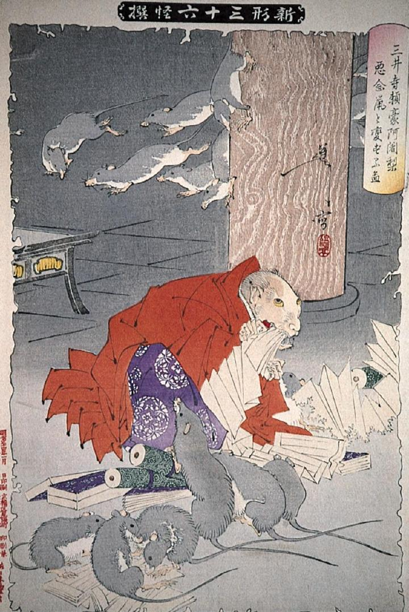

鼠に変化して経典を食い破る頼豪。赤い法衣に、紫の袴を身に付けている。周りには眷属の鼠が、同じように経文を食い散らかしている。
著作者：月岡芳年／出典：親書誌：A80_prague_0014：三井寺頼豪阿闍梨悪念鼠と変ずる図；ミイデラライゴウアジャリアクネンネズミトヘンズルズ／日付：2011／資源識別子：A80_prague_0014_0001_0000
Copyright (c)2010- International Research Center for Japanese Studies, Kyoto, Japan. All rights reserved.